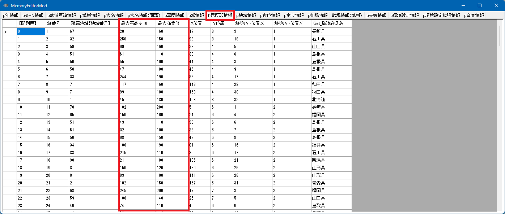
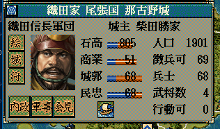

城
城とは、「二条城」や「躑躅ヶ崎館」や「春日山城」などといった、城のことです。
城と一言で言っても３つの概念で構成されます。
-
城
城という抽象的なカテゴリの概念。
-
「p城情報」という配列
城の一覧リストに相当する「城の配列」の概念。
-
p城情報[ix] (0 <= ix < 城の総数)
城の配列のうち、どれか１つの城
p城付加情報
城の位置や最大石高など、一部の情報は「p城情報」ではなく「p城付加情報」にあります。
特定の城に居る武将を求める
void カスタム::On_プレイヤ担当ターン《メイン画面》() {
int iTargetCastleID = 城配列番号::二条城;
番号リスト型 list;
for (int iBushouID = 0; iBushouID < 最大数::武将情報::配列数; iBushouID++) {
int iCastleID = p武将情報[iBushouID].所属居城【城番号】 - 1;
if (iTargetCastleID == iCastleID) {
// 大名・軍団長・現役 を対象としてかき集める
if (p武将戸籍情報[iBushouID].状態 <= 状態::現役) {
list.push_back(iBushouID);
}
}
}
// かき集めたリストに対して
for (int iBushouID : list) {
デバッグ出力 << iBushouID << ":" << Get_名字(iBushouID) << Get_名前(iBushouID) << endl;
}
}
城郭・石高・商業・人口・民忠・徴兵可
p城情報[ix].城郭
p城情報[ix].石高
p城情報[ix].商業
p城情報[ix].人口
p城情報[ix].民忠
p城情報[ix].徴兵可
それぞれの最大値・最小値は、ゲーム内のプレイでの最大値、最小値に合わせてください。
ゲーム内の最大値を超えて設定した場合にどのような影響が出るのかは未知数です。
void カスタム::On_プレイヤ担当ターン《メイン画面》() {
int CastleID = 城配列番号::二条城;
p城情報[CastleID].城郭 = 200;
// 石高の最大値については、p城付加情報 にある
int 石高max = p城付加情報[CastleID].最大石高÷10 * 10;
p城情報[CastleID].石高 = 石高max;
// 商業の最大値については、p城付加情報 にある
int 商業max = p城付加情報[CastleID].最大商業値;
p城情報[CastleID].商業 = 商業max;
p城情報[CastleID].人口 = 3000;
p城情報[CastleID].民忠 = 100;
p城情報[CastleID].徴兵可 = 999;
}
ゲーム上で表示される「人口」の欄は「本来の人口＋徴兵可」の合計値が表示されます。
最大石高や最大商業値は、「p城付加情報」にある

void カスタム::On_プレイヤ担当ターン《メイン画面》() {
int CastleID = 城配列番号::二条城;
p城付加情報[CastleID].最大石高÷10 = 250;
p城情報[CastleID].石高 = p城付加情報[CastleID].最大石高÷10 * 10;
p城付加情報[CastleID].最大商業値 = 250;
p城情報[CastleID].商業 = p城付加情報[CastleID].最大商業値;
}
兵質・鍛冶・馬産地・港・国際港・銀山・金山・一揆扇動
p城情報[ix].兵質
(悪=0, 普=1, 良=2)「兵質::悪」～「兵質::良」に対応する。
p城情報[ix].鍛冶
p城情報[ix].馬産地
p城情報[ix].港
p城情報[ix].国際港
p城情報[ix].銀山
p城情報[ix].金山
p城情報[ix].一揆扇動
void カスタム::On_プレイヤ担当ターン《メイン画面》() {
int CastleID = 城配列番号::二条城;
p城情報[CastleID].兵質 = 兵質::良;
p城情報[CastleID].鍛冶 = true;
p城情報[CastleID].馬産地 = true;
p城情報[CastleID].港 = true;
p城情報[CastleID].国際港 = true;
p城情報[CastleID].銀山 = true;
p城情報[CastleID].金山 = true;
p城情報[CastleID].一揆扇動 = true;
番号リスト型 城リスト;
for (int iCastleID = 0; iCastleID < 最大数::城情報::配列数; iCastleID++) {
if (p城情報[iCastleID].国際港 == true) {
城リスト.push_back(iCastleID);
}
}
if (城リスト.size() > 0) {
int iSelectedCastleID = 選択城ダイアログ表示(城リスト, カラム::城::外貿);
if (iSelectedCastleID != 0xFFFF) {
デバッグ出力 << Get_城名(iSelectedCastleID) << Get_城称(iSelectedCastleID) << "が選択されました。" << endl;
}
}
}
金山と銀山
- 銀山を持っていると、その城の「金山」の評価がＢとなる。
- 金山を持っていると、その城の「金山」の評価がＡとなる。
- 銀山と金山の両方を持っていると、その城の「金山」の評価がＳとなる。
- 両方もっていない場合は、その城の「金山」の評価は×となる。
巨城・城絵背景
p城情報[ix].巨城
(安土城のような超巨城にグラフィックを変更する方法はまだわかっていません)
p城情報[ix].城絵背景

void カスタム::On_プレイヤ担当ターン《メイン画面》() {
int CastleID = 城配列番号::今浜城;
p城情報[CastleID].巨城 = 1; // 城郭の最大数が200→250へとアップし、画面上のアイコンも大きくなる。
画面更新(); // 城を大きくしただけではアイコンが大きくならないので、更新する。
if (p城情報[CastleID].城絵背景 == 城絵背景::海) {
デバッグ出力 << "この城は海もしくは湖に面している可能性が高いです" << endl;
}
else if (p城情報[CastleID].城絵背景 == 城絵背景::山) {
デバッグ出力 << "この城は山にある城の可能性が高いです" << endl;
}
else if (p城情報[CastleID].城絵背景 == 城絵背景::平野) {
デバッグ出力 << "この城は平地の開けた場所に存在する可能性が高いです" << endl;
}
else if (p城情報[CastleID].城絵背景 == 城絵背景::林) {
デバッグ出力 << "この城は林や森の中に存在する可能性が高いです" << endl;
}
}
城名の取得や変更
string Get_城名( int 城番号【配列用】)
void Set_城名( int 城番号【配列用】, string 城名 )
string Get_城称(int 城番号【配列用】)
void Set_城称(int 城番号【配列用】, string 城称)
城称には、「"城"、"御坊"、"寺"、"御所"、"館"、"町"」のいずれかの指定する。"町"の代わりに""でもよい。
Get_城名(...) や Get_城称(...)については、すでにあちこちで記載されているので問題はないでしょう。
void カスタム::On_プレイヤ担当ターン《メイン画面》() {
int iCastleID = 城配列番号::観音寺城;
if (Get_城名(iCastleID) == "観音寺") {
Set_城名(iCastleID, "観念寺");
}
}
ScenarioMod 2.8.0.1 以降
void カスタム::On_プレイヤ担当ターン《メイン画面》() {
int iCastleID = 城配列番号::二条城;
Set_城名(iCastleID, "三条");
Set_城称(iCastleID, "館");
}
ScenarioMod 2.8.0.0 以下では、一部の城名を変更できない
どのような仕組みなのかは判然としませんが、途中で城名が変化する城のうち、ごく一部の城名だけが例外的な場所で管理されており、
Set_城名(...)では変更できないことがあります。
メモリに、p城情報によって管理されている214個の城リストとは別に、
004BB88C %s様、..%sをいくら.%sますか.兵..家..軍団....甲府....躑躅ヶ崎....
004BB8CC 徳山....長島....長島願証....金沢....尾山....伏見....二条....室町
004BB90C ....石山....石山本願....大坂....城..館..御所....寺..御坊....%*s.
といったものがメモリ上で展開されており、そちらを参照しながら条件を見ながらハードコーディングで文字列が構築されています。
char *p = (char *)0x4BB8CC; // 城リストとは別の場所で確保されている徳山の文字列
strcpy(p, "北海道");
といった方法にて強引に書き換えることが出来ます。
城名から城番号【配列用】を逆引きする
通常は城名から逆引きはせず、
int iCastleID = 城配列番号::稲葉山城;
のような形で城番号【配列用】を取得します。
城番号【配列用】とはとどのつまり城214個の「位置」に割り当てられた番号と言ってもよく、
どのようなシナリオでも固定であり、同じ位置にある城の番号が入れ替わったりはしません。
しかしながら、なんらかの都合により「文字列から逆引き」するシーンが出るかもしれないため、
この関数が用意されています。
void カスタム::On_プレイヤ担当ターン《メイン画面》() {
int iCastleID = Get_城番号【配列用】("観音寺");
// そのような城は存在した
if (0 <= iCastleID && iCastleID < 最大数::城情報::配列数) {
デバッグ出力 << "観音寺城の配列用の城番号は" << iCastleID << "です。" << endl;
}
else {
デバッグ出力 << "そのような城は存在しません。" << endl;
}
}
ある「軍団」が持つ城の一覧
int Get_軍団所持城数(int 軍団番号【配列用】)
番号リスト型 Get_軍団所持城番号リスト【配列用】(int 軍団番号【配列用】)
void カスタム::On_プレイヤ担当ターン《メイン画面》() {
// 明智光秀が軍団長のとき、その城数と城番号【配列用】のリストを得る
int iBushouID = Get_武将番号【配列用】(顔番号::明智光秀);
if (0 <= iBushouID && iBushouID < 最大数::武将情報::配列数) {
if (p武将戸籍情報[iBushouID].状態 == 状態::軍団長) {
int iGundanID = p武将情報[iBushouID].所属軍団【軍団番号】 - 1;
if (0 <= iGundanID && iGundanID < 最大数::軍団情報::配列数) {
int 城数 = Get_軍団所持城数(iGundanID);
デバッグ出力 << "明智光秀の軍団の城数は" << 城数 << endl;
番号リスト型 list = Get_軍団所持城番号リスト【配列用】(iGundanID);
for (int iCastleID : list) {
デバッグ出力 << Get_城名(iCastleID) + Get_城称(iCastleID) << endl;
}
}
}
}
}
ある「大名」が持つ城の一覧
int Get_大名所持城数(int 大名番号【配列用】)
番号リスト型 Get_大名所持城番号リスト【配列用】(int 大名番号【配列用】)
void カスタム::On_プレイヤ担当ターン《メイン画面》() {
// 織田信長が大名のとき、その城数と城番号【配列用】のリストを得る
int iBushouID = Get_武将番号【配列用】(顔番号::織田信長);
if (0 <= iBushouID && iBushouID < 最大数::武将情報::配列数) {
if (p武将戸籍情報[iBushouID].状態 == 状態::大名) {
int iDaimyoID = p武将情報[iBushouID].所属大名【大名番号】 - 1;
if (0 <= iDaimyoID && iDaimyoID < 最大数::大名情報::配列数) {
int 城数 = Get_大名所持城数(iDaimyoID);
デバッグ出力 << "大名、織田信長の麾下の城数は" << 城数 << endl;
番号リスト型 list = Get_大名所持城番号リスト【配列用】(iDaimyoID);
for (int iCastleID : list) {
デバッグ出力 << Get_城名(iCastleID) + Get_城称(iCastleID) << endl;
}
}
}
}
}
城主と本城
p城情報[ix].城主【武将番号】
この値を参照することは問題ありませんが、この値を直接書き換えないようにしてください。書き換える際は Set_城主(...)関数を利用します。
p城情報[ix].本城
本城は「本城::非本拠」「本城::大名」「本城::軍団長」のいずれかの値です。
この値は原則書き換えないようにしてください。
void カスタム::On_プレイヤ担当ターン《メイン画面》() {
int iCastleID = 城配列番号::二条城;
if (p城情報[iCastleID].本城 == 本城::大名) {
デバッグ出力 << "この城は大名の本拠です" << endl;
int iBushouID = p城情報[iCastleID].城主【武将番号】-1;
if (0 <= iBushouID && iBushouID < 最大数::武将情報::配列数) {
デバッグ出力 << "大名は" << Get_名字(iBushouID) + Get_名前(iBushouID) << endl;
}
}
else if (p城情報[iCastleID].本城 == 本城::軍団長) {
デバッグ出力 << "この城は軍団長の本拠です" << endl;
int iBushouID = p城情報[iCastleID].城主【武将番号】 - 1;
if (0 <= iBushouID && iBushouID < 最大数::武将情報::配列数) {
デバッグ出力 << "軍団長は" << Get_名字(iBushouID) + Get_名前(iBushouID) << endl;
}
}
else if (p城情報[iCastleID].本城 == 本城::非本拠) {
デバッグ出力 << "この城には大名も軍団長も居ません。" << endl;
int iBushouID = p城情報[iCastleID].城主【武将番号】 - 1;
// 城主が居る
if (0 <= iBushouID && iBushouID < 最大数::武将情報::配列数) {
デバッグ出力 << "城主は" << Get_名字(iBushouID) + Get_名前(iBushouID) << endl;
}
}
}
城主の入れ替え
bool Set_城主(int 武将番号【配列用】)
これは指定の「現役武将Ａ」を「城主」とする関数である。
- ①もしも、「現在の城主Ｂ」が、ただの普通の城主であれば、指定の「現役武将Ａ」が単に城主となる。
- ②もしも、「現在の城主Ｂ」が「軍団長」であったならば、この関数によって「現役武将Ａ」が、城主 兼 軍団長となる。
- ③もしも、「現在の城主Ｂ」が「大名」であったならば、この関数によって「現役武将Ａ」が、城主 兼 大名となり、「大名だった人」は宿老となる。
void カスタム::On_プレイヤ担当ターン《メイン画面》() {
// 柴田勝家が一般武将で、かつ、城主ではない時に、城主にする
int iBushouID = Get_武将番号【配列用】(顔番号::柴田勝家);
if (0 <= iBushouID && iBushouID < 最大数::武将情報::配列数) {
// どの城にいるか
int iCastleID = p武将情報[iBushouID].所属居城【城番号】 - 1;
if (0 <= iCastleID && iCastleID < 最大数::城情報::配列数) {
// 通常の身分か確かめる
if (p武将戸籍情報[iBushouID].状態 == 状態::現役) {
if (身分::宿老 <= p武将戸籍情報[iBushouID].身分 && p武将戸籍情報[iBushouID].身分 <= 身分::足軽頭) {
int success = Set_城主(iBushouID);
if (success) {
デバッグ出力 << "柴田勝家は城主になりました" << endl;
}
}
}
}
}
}

城の説明文の変更
城の説明文などを状況を判断しながら変更することが出来ます。
詳細は、On_戦国名城物語要求時 を参照してください。
より詳細を知るには...
「城」に関する主な所は以上となります。
詳しくは「城情報型.h」や「城情報列挙.h」などを参照してください。